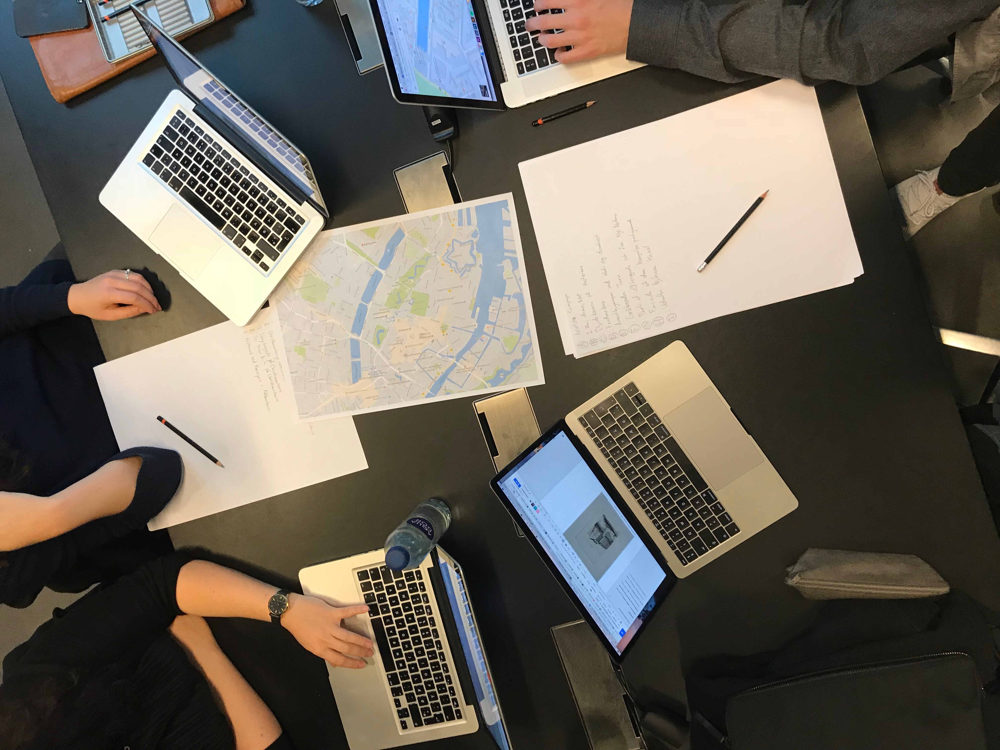
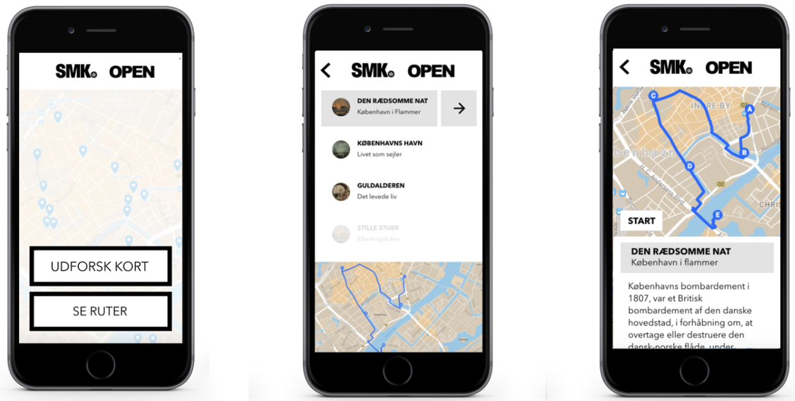

The premis is to take advantage of a part of SMK's collection which consists of works that are no longer in copyright term (Public Domain), and take the experience of a museeum and place it within a new context.
SMK OPEN is a way of exploring art outside of the regular four walls of a museeum and place it within a context - whether it be the origin, depiction or artists environment. It is created to try and break the assumptions and concerns centered around the art world as being boring and elitist, and try to create conversation and interest on one's own premisis.
SMK OPEN
Year: Fall 2017
Academic work: Group based project
My role: Sketching, mockups, wireframing, Adobe XD prototyping.
SMK OPEN (created in Adobe XD) is a prototype showcasing working with an API, making art accesible outside of SMK's museum. By creating predefined routes that the user can follow, they are introduced to art in a way that challenges their preassumptions of the art world, by contextualising it within their own surroundings.

Challenge
Process
The project takes advantage of Design Thinking as an explorative tool and is based around three spaces of innovation: inspiration, ideation and implementation.
With a strong focus on the user's experience, the project utilises interviews, Morris Hargreaves McIntyre's cultural segments and personas in the process of development. By establishing design principles, the further development is based within brainstorming, "How Might We"-questions, wireframing, prototyping and testing in order to achieve the wanted outcome.

Learnings
test By creating the prototype in Adobe XD, I learned a lot about creating and interacting with prototypes and the importance of a well planned project.
